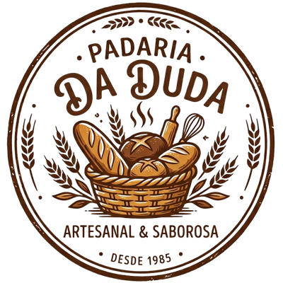

#D8A179: Esse é o caramelo claro, cor de casca de pâo quente. Na psicologia das cores ele desperta apetite, aconchego e sensação de artesanal. No site, ele é a cor de destaque, usada para chamar atenção e passar ideia de produto feito na hora.
#3d2b1f: Este é o marrom café, mais escuro. Transmite tradição, estabilidade e confiança. É a cor do texto, porque garante boa leitura e remete a café e chocolate
#FFF8E7: Esse é o bege claro. Transmite limpeza, leveza e conforto. É a cor de fundo, para deixar o site limpo e o produto em destaque.
O que juntas representam?:
A combinação das cores #d8a179 e #3d2b1f representa aconchego, apetite, tradição e confiança. Os tons claros transmitem leveza, organização, limpeza, equanto o marrom mais escuro acrescenta estabilidade e credibilidade.
Juntas, as cores criam uma identidade visual artesanal, saborosa e acolhedora, perfeita para a Padaria da Duda.